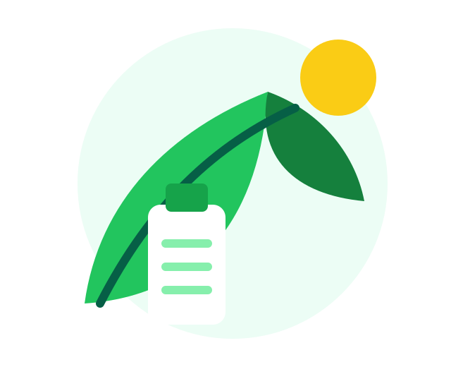

Зрозумілі правила
Карти сортування пояснюють підготовку та напрямок кожного предмета.
Малі кроки — реальний вплив
Дізнайся, куди класти відходи, перевір свої екозвички та склади персональний план економії.

Карти сортування пояснюють підготовку та напрямок кожного предмета.
Чекліст перетворює звички на орієнтовну економію ресурсів.
Тест дає поради відповідно до поточного рівня знань.
Завантаження матеріалів…
Дайте відповідь на 10 коротких питань і отримайте персональну пораду.
Розпочати тест